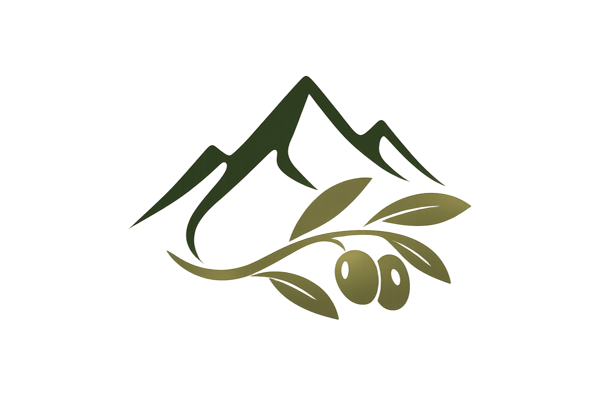
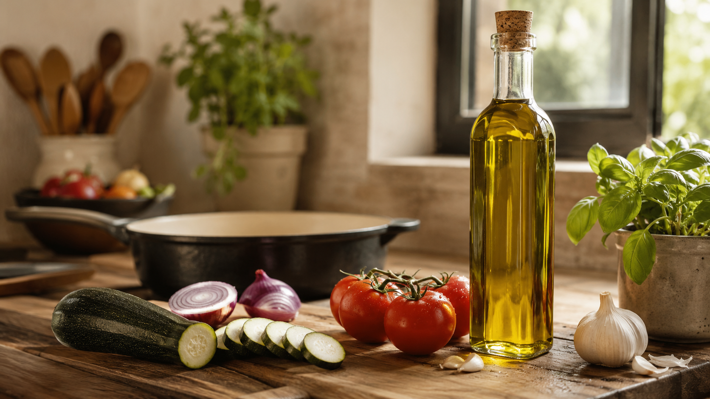
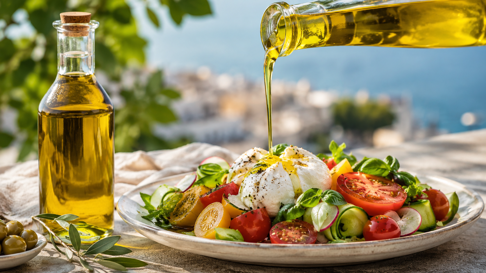
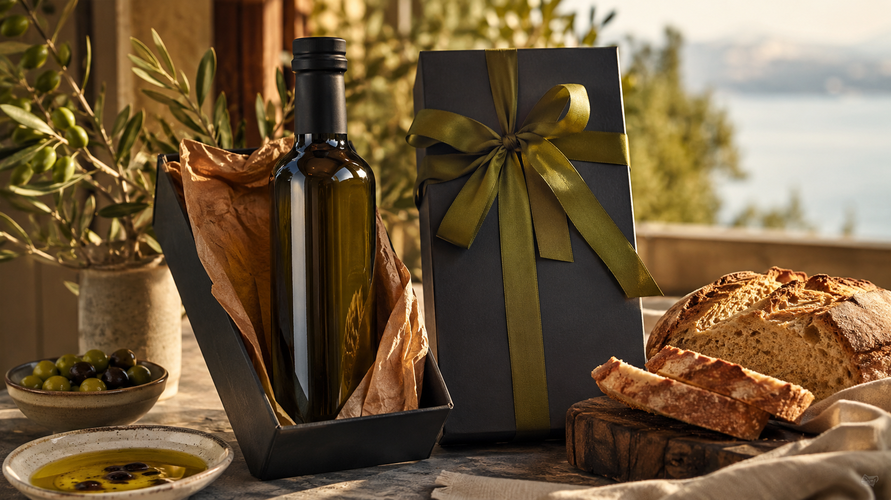
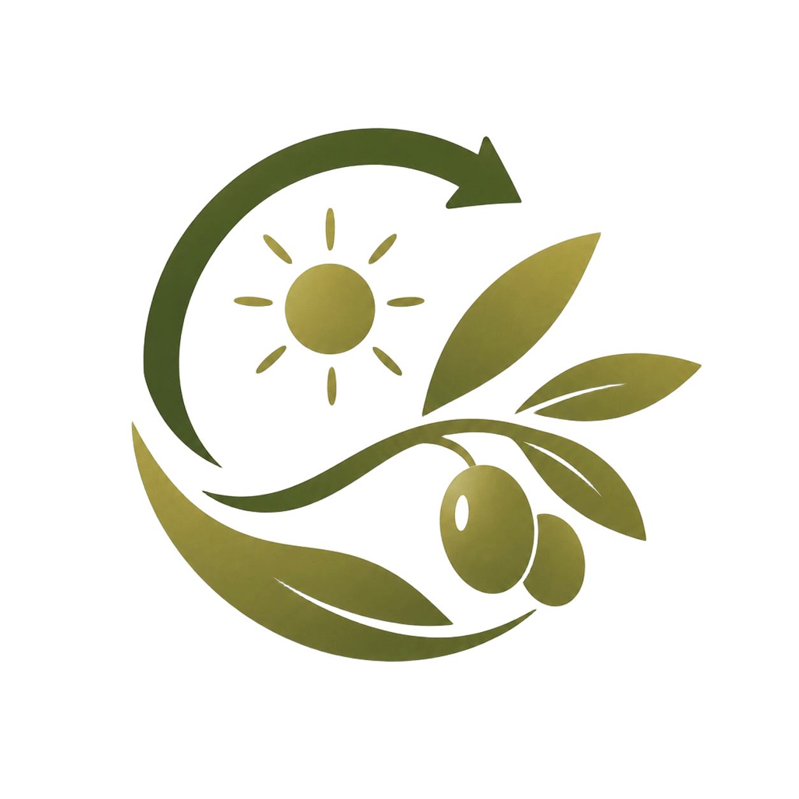
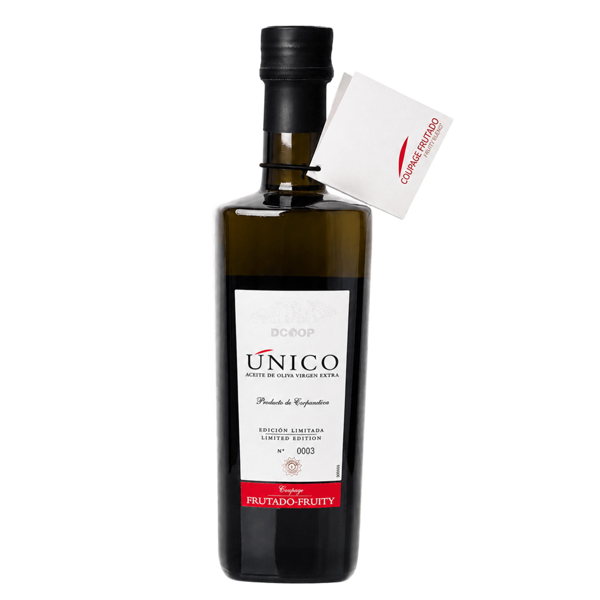

Aceite de montaña
Nuestro olivar crece a más de 900 metros. La maduración lenta da aceites con cuerpo, alto en ácido oleico y baja acidez.
Aceite de oliva virgen extra de la DOP Montes de Granada
Ver nuestros aceites
Somos una cooperativa fundada en 1963 por las familias olivareras de Montejícar. Desde entonces transformamos en nuestra almazara la cosecha de nuestros socios y elaboramos aceites que expresan el carácter del olivar de montaña.
Pertenecemos a la DOP Montes de Granada y formamos parte de DCOOP, la mayor cooperativa olivarera de España. Eso nos da raíces locales y red para llegar lejos.
Conoce nuestra historia
Aceites equilibrados y versátiles para guisos, sofritos y aliños cotidianos.
Ver tienda →
Monovarietales con carácter para ensaladas, tostadas, carpaccios y gazpachos.
Ver tienda →
Hojiblanca de recolección temprana. Producción limitada de campaña.
Ver tienda →Nace la cooperativa en Montejícar.
Entramos en la mayor cooperativa olivarera de España.
Aprobación municipal del nuevo emplazamiento.
Subvención de 1,18 M € para mejorar las instalaciones.
Ayuda REACT-UE por el sobrecoste de energía.
Instalación de placas fotovoltaicas en la almazara.

Nuestro olivar crece a más de 900 metros. La maduración lenta da aceites con cuerpo, alto en ácido oleico y baja acidez.
Cientos de familias olivareras llevan décadas trayendo aquí su cosecha. Cada gota tiene un nombre detrás.

Hemos modernizado la almazara con ayudas públicas y autoconsumo fotovoltaico para reducir nuestra huella energética.

Nuestro AOVE más exclusivo
Un aceite reservado para los paladares más exigentes, con una producción muy reducida —muy por debajo de la del resto de nuestros aceites— elaborado a partir de una cuidada selección de los mejores lotes de campaña.
Una edición exclusiva y limitada. Cuando se agotan las botellas, ya no hay más hasta la siguiente cosecha.
Comprar Único Frutado